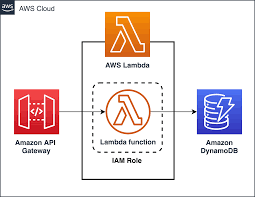

Projects
Mobile offloading: Handwritten digit classification
- Developed an android application that lets users click pictures of handwritten digits, dividing it into four quadrants and sending each quadrant to a slave device. The device which is uploading an image is ran in Master mode.
- Built a slave mode in the application that receives the image quadrants from the Master device and does the classification, thus sending the result back to the Master device.
- Master device does the classification using the confidance values received from the four slave devices and outputs the classification result.
PEARL: An interactive visual analytic tool for understanding personal emotional style derived from social media :
- A person’s emotions have a significant impact on their behavior and performance in the real world. Hence, understanding and finding patterns in a person’s emotions is highly beneficial to both individuals and businesses.
- PEARL (Personal Emotion Analysis, Reasoning, and Learning) is a timeline-based visual emotion analysis tool that will enable users to interactively evaluate and examine a person's emotional patterns across time from their social media text.
- Visualization - Stream graph, Marimekko chart, Word Cloud, Circle Packing, Pie Chart, Area Chart, Line Chart
- The dataset used in this project consists of a date and timestamp along with the tweet text obtained using the Twitter API for a specific user.

Auto-scale face recognition application using AWS Lambda
- Built elastic applications that can automatically scale out and in on-demand and cost-effectively by using the PaaS cloud resources
- Developed a face recognition application using a function based serverless computing service AWS Lambda that queries data for the recognized faces from the Dynamo Db

Classify handwritten digits using Android App
- Developed an android application that lets users click pictures of handwritten digits and upload the image to a server
- Built a Flask server to classify the digits and place them in the respective folders after classification. Used a deep-learning framework on the MNIST dataset to classify different handwritten digits

Autoscaling Image Recognition Application using AWS
- Built an elastic application that can automatically scale out and in on-demand and cost-effectively by using the IaaS cloud resources
- The application provided an image recognition service to users to perform deep learning on images provided by them

Lossy Image Compression using Autoencoders
- Performed a comprehensive study of a research paper focused on end-to-end image compression using Compressive Autoencoder (CAN).
- Compared the modern neural network compression techniques with the traditional techniques like JPEG-2000

Distributed Blockchain based Peer to Peer Communication between PMUs
- Reconfigured current SCADA based modern power systems to implement Real-time monitoring and correction with the help of a blockchain-based solution
- Designed a smart contract in Solidity language to define the process, and detect and distinguish faults occurring in the system
- Increased energy efficiency by using a robust working mechanism (Proof of Authority protocol) compared to standard Bitcoin blockchain (Proof of work protocol)
Walking Stick for Visually Impaired
- Designed an Arduino-based alternative using ultrasonic and moisture sensors to replace the traditional walking stick and ease the detection of obstacles and potholes.
- Technologies used - Arduino, sensors, PCB, connectors, and IR Transmitter-Receiver pair